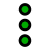
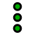
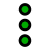
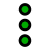
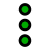
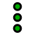

Поточний файл буде завантажено на цей комп’ютер.
Тут ви зможете додавати файли для своїх проєктів
Перейменування проєкту допоможе вам упорядкувати збережений код
Будьте обережні: якщо ви вирішите видалити файл, ви не зможете відновити його, якщо не збережете копію
Більш світлі кольори чудово підходять для кодування вдень. Деякі люди віддають перевагу кодуванню вночі:
Темніші кольори більше схожі на командний рядок. Світліші кольори більше схожі на вікно програми:
Виконання коду рядок за рядком може бути корисним способом пошуку помилок
Вибір довшого часу між анімацією кожного рядка допоможе вам зрозуміти та пояснити код під час його виконання
Зробивши вікно виведення прозорим, ви зможете бачити свій код під ним
 



 
